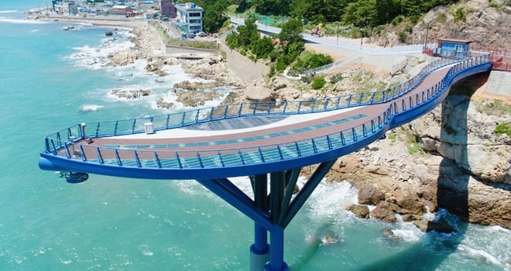
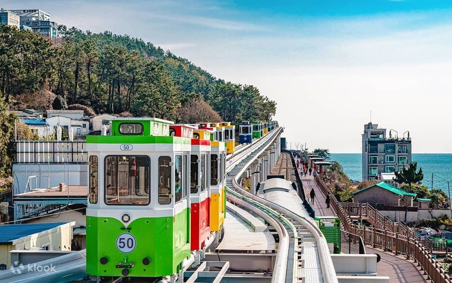
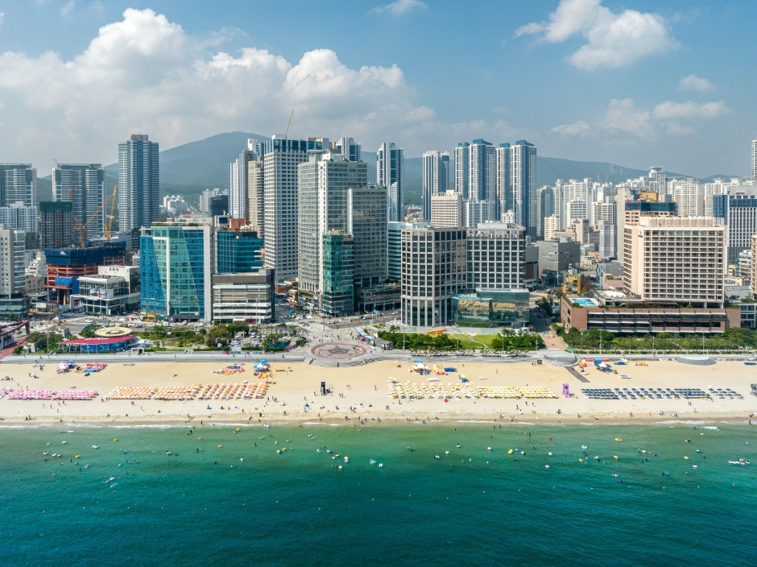
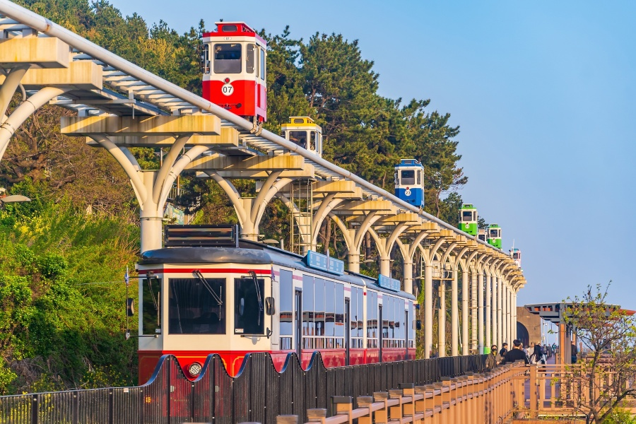
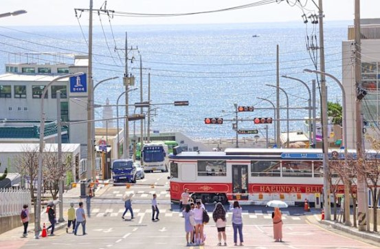
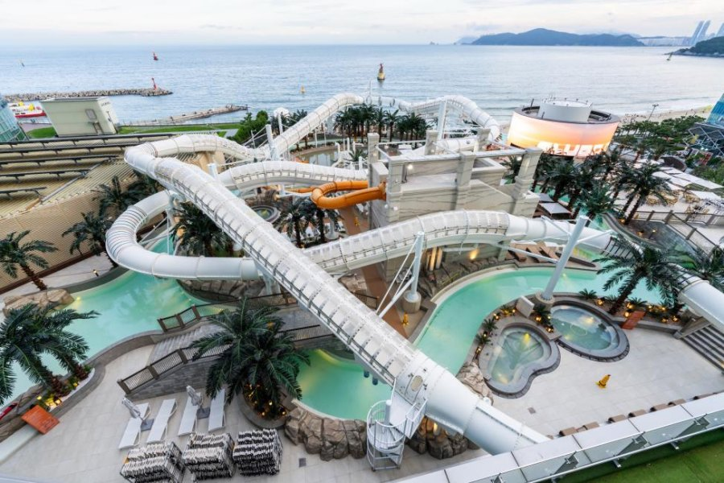
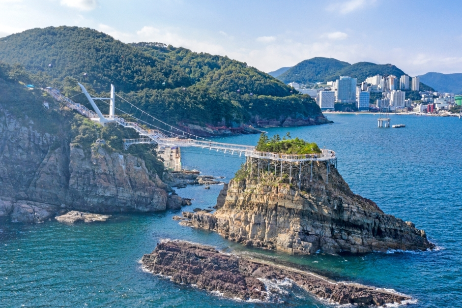
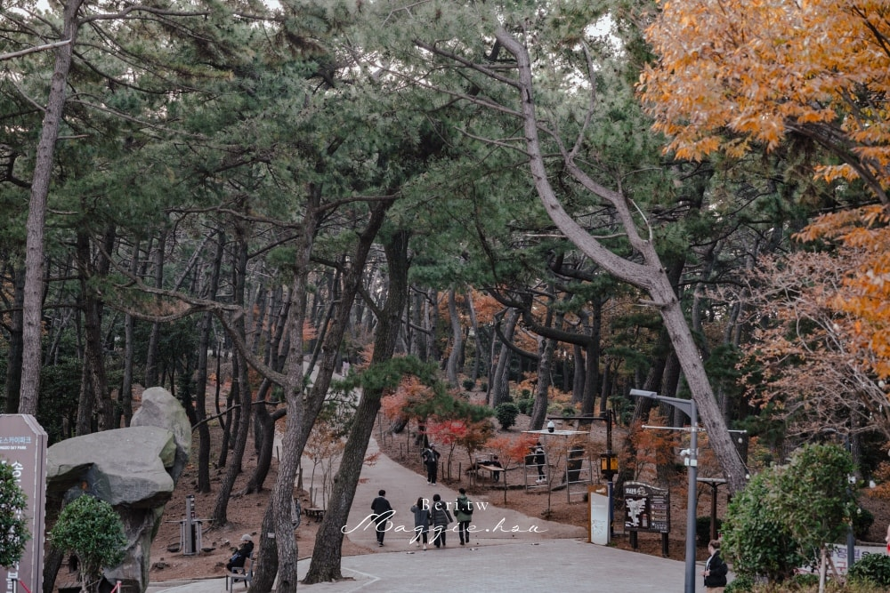
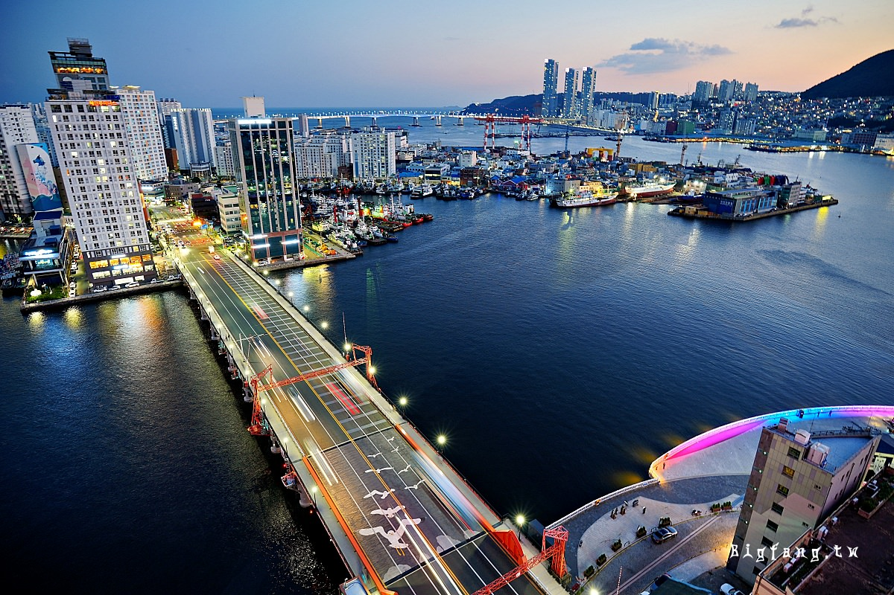

2026/7/1（三）– 7/5（日）・2大1小（寶貝4歲半）親子隨身手冊
Hound Garden & Terrace Hotel
📍 55, Gunam-ro 12beon-gil, Haeundae-gu, 釜山
7/5 抵台後，從桃園機場直接接送回台北住家，已預約完成 ✅
Day 1（7/1 三）海雲台在地精華一條龍
海岸列車→平交道→天空步道→天空膠囊→午餐→Check-in大補眠→海雲台沙灘→傳統市場
Day 2（7/2 四）機張放電＋Centum City精華避暑
Skyline Luge斜坡滑車→新世界百貨午餐→Museum 1藝術館→逛街→Club D Oasis汗蒸幕
Day 3（7/3 五）松島纜車＋西面血拼
松島海上纜車→龍宮天空步道→岩南公園→南浦洞午餐→西面商圈血拼→西面晚餐
Day 4（7/4 六）南浦漫遊＋廣安里夜景
甘川洞文化村→南浦洞商圈→樂天光復店（水舞秀+午餐）→影島大橋→廣安里Millac Market→無人機秀
Day 5（7/5 日）悠閒早晨＋超市大掃貨
海雲台早餐→新世界Centum午餐→Spa Land汗蒸幕→樂天超市大掃貨→金海機場
深夜紅眼班機 EASTAR JET ZE988 落地，出關後直接搭計程車前往海雲台（車程45-50分鐘），在車上讓爸爸和寶貝補眠。
機場→飯店 ₩30,000–40,000（約台幣$700–940）飯店寄放行李後，步行3分鐘到海雲台主街。把白飯倒進湯裡，夾軟嫩豬肉給寶貝，超暖胃。冷氣足，可在裡面充電休息。
₩10,000–13,000/人（步行3分鐘，免計程車）步行或短程計程車到尾浦站，現場購票搭「海岸列車（Beach Train）」沿海前往青沙浦站，全排面向大海的寬敞座位，一路看海。
現場購票 ₩7,000/人（不需用Pass換） 📍 尾浦站出青沙浦站，馬上拍「灌籃高手平交道」（趁遊客少）→ 步行或計程車2分鐘到天空步道，挑戰透明玻璃地板，鳥瞰清澈大海。推車可通行，10:30剛開放，光線好人少。步道長約200公尺，來回步行約10–15分鐘。
天空步道／平交道打卡 均免費
【您預約的場次】青沙浦站 11:00–11:30 第六入場。回到青沙浦站二樓，登上彩色膠囊列車，順光吹風看海30分鐘，有小電扇，寶貝超興奮！抵達尾浦站後直接散步回主街。
✅ 已預訂 RS26008983848｜₩55,000/3人（信用卡）｜憑KakaoTalk手機登機證入場
膠囊列車回尾浦站，散步回海雲台主街。外帶魚糕年糕串、超商香蕉牛奶當下午茶補充。
₩8,000–15,000/人主方案：回Hound Garden辦理進房（15:00開始），拉遮光窗簾，全家躺平補眠3小時（最重要的生存策略！）7月中午紫外線最毒，躲室內最聰明。
換短褲拖鞋，從飯店走5-7分鐘到海水浴場，太陽偏西、海風涼爽，最舒服的時段。寶貝挖沙、踩水、追海鷗盡情玩。
免費（飯店步行5-7分鐘）
玩完沙直接散步到傳統市場（飯店附近步行可達）。帶回飯店吹冷氣配啤酒享用，或外帶散步邊吃邊逛。
第一天通常因紅眼航班較累，這段抓彈性，依全家當下精神狀況三選一：
24小時營業，海雲台最具代表性豬肉湯飯，湯頭濃郁，配料豐富（血腸+多種豬肉部位）。 📌 必點：돼지국밥 豬肉湯飯（點清湯版） 📌 把白飯倒進湯裡，剪嫩豬肉給寶貝
₩10,000–13,000 📍 Google Maps口味濃厚又清爽，在地熟客回頭率高，24小時營業，任何時間都可去。 📌 必點：순대국밥 血腸湯飯 或純豬肉湯飯 📌 辣度可調，可請店員不辣
₩10,000–13,000 📍 Google Maps西面排隊名店，湯頭濃郁不辣，代代傳承的秘方。📌 4歲半寶貝配飯吃超愛 📌 配料：豬肉片+泡菜+白飯完美組合
₩10,000–13,000 📍 Google Maps西面人氣烤肉店，肉質新鮮，炭火烤製。📌 必點：삼겹살五花肉／목살頸肉 📌 用生菜包肉+蒜片+醬料 📌 必配：韓國燒酒/啤酒
₩20,000–35,000 📍 Google Maps釜山特色帶骨豬肋排，甜鹹醬汁入味。📌 必點：양념갈비醬燒帶骨豬肋排 📌 啃骨頭的過癮感，必須體驗 📌 小孩可要求剪小塊
₩25,000–40,000 📍 Google Maps釜山最正宗的烤腸（막창）專門店，在地深夜食堂。📌 必點：막창豬大腸／곱창小腸 📌 配蒜片+芝麻油蘸醬+燒酒 ⚠️ 建議成人嘗試，腸味較重
₩15,000–25,000 📍 Google Maps南浦洞知名烤腸，本地人深夜必去。📌 必點：양곱창牛胃+小腸混合 📌 份量十足，酒肉一流 📌 氛圍：熱鬧市場感，道地體驗
₩18,000–30,000 📍 Google Maps釜山最知名魚糕品牌，必吃！📌 必點：어묵탕魚糕湯（免費喝湯！） 📌 各式串燒魚糕꼬치어묵 📌 寶貝最愛：方形不辣魚糕+年糕串떡꼬치
₩1,000–3,000/串 📍 Google Maps新世界百貨人氣韓式料理，午餐首選。📌 必點：갈비찜燉排骨／비빔밥拌飯 📌 套餐包含多種小菜，豐盛實在
₩15,000–30,000 📍 Google Maps正宗平壤冷麵，麵條Q彈，湯頭清甜微酸。📌 必點：물냉면水冷麵（推薦！） 📌 配料：牛肉片+半顆水煮蛋+黃瓜絲
₩15,000–22,000 📍 Google Maps釜山在地知名平價披薩，韓式獨特風味。📌 必點：招牌原味披薩（厚實酥脆麵團） 📌 甜鹹口味，跟義式不同但好吃
₩10,000–18,000 📍 Google Maps青沙浦海景咖啡廳，天空步道旁。📌 必點：브로니布朗尼（招牌甜點） 📌 手沖咖啡+海景絕配 📌 打卡：面向大海的落地窗座位
₩7,000–12,000 📍 Google Maps西面復古風格咖啡廳，裝潢精緻網美必打。📌 必點：季節限定蛋糕（草莓/抹茶） 📌 打卡：歐洲小客廳風格
₩7,000–12,000 📍 Google Maps韓國刨冰始祖，夏天必吃消暑聖品。📌 必點：딸기설빙草莓雪冰／인절미설빙黃豆粉麻糬雪冰 📌 份量超大，2-3人分食剛好
₩7,000–14,000（2-3人分） 📍 Google Maps韓國知名咖啡甜點連鎖，質感好。📌 必點：딸기생크림케이크草莓生鮮奶油蛋糕 📌 位置：百貨內就有，逛街間休息
₩7,000–15,000 📍 Google Maps海雲台最排隊的糖餅，釜山必吃！📌 必點：씨앗호떡種子糖餅 📌 黑糖+葵瓜子+花生內餡，外皮酥脆 ⚠️ 剛起鍋燙口，等一下再咬
₩2,000–2,500/個 📍 Google Maps南浦洞BIFF廣場旁的糖餅始祖。📌 必點：씨앗호떡（種子比例更高，更酥脆） 📌 比海雲台版更酥，甜度適中
₩2,000–2,500/個 📍 Google Maps韓國人氣粥品連鎖，健康清淡暖胃首選。📌 必點：전복죽鮑魚粥／야채죽蔬菜粥／해물죽海鮮粥 不辣，老少皆宜，比湯飯更清爽易消化
₩8,000–13,000 📍 Google Maps韓國超人氣蛋三明治連鎖，排隊名店！📌 必點：Original原味蛋三明治／아보카도牛油果款（IG打卡首選） 好吃又好拍，早餐必試
₩6,000–9,000 📍 Google Maps釜山超夯網紅麵包店，外觀設計像洗衣店超有趣！📌 必點：소금빵鹽可頌／크림빵奶油麵包 排隊名店，建議早點去，常常賣完
₩3,000–6,000/個 📍 Google Maps💡 什麼是 BIG 3 Pass？
購買一張Pass可免費兌換「1個A區大景點 + 2個B區小景點」，共3個景點，適合安排門票較貴的景點使用，省下最多錢。A區大點限選1個（最貴的），B區小點可選2個，不限組合。購買方式：Klook/KKday/現場購買均可，建議出發前線上購，通常有優惠。
| 景點 | 票價 | 使用日 |
|---|---|---|
| Club D Oasis 汗蒸幕 | ₩15,000–25,000/人 | 7/2 晚上 |
| 海岸列車（去程）尾浦→青沙浦 | ₩7,000/人 | 7/1 10:10 |
| 松島龍宮天空步道 | ₩1,000/人（4歲半免費！） | 7/3 10:00 |
| Spa Land 汗蒸幕 | ₩18,000–25,000/人 | 7/5 13:30 |
💡 建議 Club D Oasis 與 Spa Land 在台灣出發前先用 Klook/KKday 線上購，比現場價便宜約10-20%。
| 景點 | 行程日 | 備註 |
|---|---|---|
| 海雲台海水浴場 | 7/1 & 7/5 | 無需購票，直接走進去 |
| 廣安里無人機秀 | 7/4（六）20:00 | 週六限定夏季場次 |
| 影島大橋開橋秀 | 7/4（六）14:00 | 週末限定，站路邊看即可 |
| 樂天百貨光復店水舞秀 | 7/4 13:00 | 每逢整點，約10-15分鐘 |
| 樂天百貨展望台 | 7/4 | 11-13F，育嬰室完善 |
| 青沙浦天空步道／平交道 | 7/1 | 步道約200公尺 |
| 岩南公園天空花園 | 7/3 | 恐龍模型裝置 |

海岸列車（Beach Train）海雲台藍線公園／7/1
沿海觀光列車，從尾浦站出發，全排座位面向大海，景色一路開闊。去程搭到青沙浦，回程搭天空膠囊不走回頭路。
₩7,000/人（現場）｜單程約15-20分鐘天空膠囊列車（Sky Capsule）海雲台藍線公園／7/1已預訂
獨立彩色小包廂沿海岸線緩慢行進，11:00-11:30是順光時段，海景特別美。車廂內有小電扇，速度緩慢老少皆宜。
✅ 已預訂 ₩55,000/3人
灌籃高手平交道青沙浦／7/1
激似鎌倉高校前的平交道，等彩色天空膠囊列車經過時拍攝。韓版鎌倉打卡點，彩色列車+大海背景，構圖絕美。
免費｜拍照約10-15分鐘Skyline Luge 機張斜坡滑車機張／7/2
搭吊椅上山後，坐特製滑車從山頂滑下，速度自控，大人抱小孩共乘安全刺激。09:30開園平日完全不排隊。
✅ BIG3 Pass A區（原價₩30,000） 兒童共乘₩12,000Museum 1 數位媒體藝術館Centum City／7/2
上億LED地板+巨型螢幕沉浸式光影藝術，對寶貝像走進巨大萬花筒。下午2-4點入內最消暑避開烈日，緊鄰新世界百貨。
✅ BIG3 Pass B區（原價₩18,000） 兒童₩13,000另購
Club D Oasis 汗蒸幕Centum City附近／7/2晚上
釜山著名汗蒸幕，木桶浴/岩盤浴/休息室。滑完車逛完街，晚上放鬆最適合，4歲半寶貝可入場。
Klook/KKday線上購 約₩15,000–25,000松島海上纜車松島／7/3
透明水晶車廂跨海飛越，低頭看腳下海水。週五上午排隊時間最短黃金時段。含龍宮步道+岩南公園絕配行程。
✅ BIG3 Pass B區（原價₩20,000）
松島龍宮天空步道松島（下纜車2分鐘）／7/3
懸崖鏤空鐵網步道直視腳下海浪，牽著寶貝像海上大冒險。⚠️ 推車寄放纜車站。
成人₩1,000｜7歲以下免費
岩南公園天空花園松島（纜車對岸）／7/3
巨型恐龍模型裝置（會發聲+擺動），噴泉廣場寶貝跑跑放電。散步約30-45分鐘。
免費甘川洞文化村甘川洞／7/4
彩色小屋山城，韓國版馬丘比丘。早上09:00到，避人潮順光拍照最美。部分路段有坡度，主要步道全程約1.5–2公里。
免費（部分展覽₩2,000–5,000）影島大橋開橋秀南浦洞／7/4（週六）
韓國唯一跨海開合橋，週末14:00準時，樂天百貨側門步行1分鐘。橋身緩緩升起，氣勢磅礴。
免費 週末限定14:00
樂天百貨展望台（光復店）南浦洞／7/4
頂樓11-13F免費開放，360度俯瞰釜山港+影島大橋+釜山塔。育嬰室完善，下午光線清晰。
免費廣安里無人機秀廣安里沙灘／7/4（週六）
週六限定3D無人機光影表演，數百台無人機在廣安大橋夜景前變幻圖案。20:00場最推薦，3D圖案媲美高科技煙火。
免費Spa Land 汗蒸幕新世界百貨Centum City內／7/5
全釜山最高級汗蒸幕，直接從新世界百貨進入。「羊角頭」全家福必拍！上飛機前洗澡換衣，寶貝一路睡回台灣。
Klook/KKday線上購 約₩18,000–25,000從海雲台站4號出口出來，往舊火車站後方步行約2分鐘即可抵達。這裡由舊住宅平房改建，充滿異國風情與慢活步調。 📌 逛街亮點：聚集許多新興韓國文青選物店（人氣雜貨DUPLIT MARKET、風格選物LUFT MANSION）、質感咖啡廳與異國料理餐廳 📌 必買伴手禮：釜山著名伴手禮 Busan Bada Sand（부산바다샌드）夾心餅乾，店門口有招牌白色小熊，知名打卡熱點！
伴手禮₩10,000–20,000｜咖啡₩6,000–10,000 📍 Google Maps從地鐵站3號/5號出口一路筆直延伸到海雲台海灘的寬闊步行大街。您住的 Hound Garden & Terrace Hotel 就在這條街的巷子裡，一出門就能開逛！ 📌 逛街亮點：兩側開滿 Olive Young（美妝保養必逛）、Daiso、Artbox（文具雜貨）以及各式韓式拍貼機店 📌 美食聚集：沿路有著名盲鰻料理、古來思魚糕（Goraesa Eomuk）名店，傍晚或週末常有街頭藝人表演，生活機能極佳
美妝₩10,000起｜拍貼機₩10,000/組 📍 Google Maps海雲台地區最大間、最主流的大型超市，販售種類極為齊全，是觀光客掃貨首選。 📌 交通位置：位於地鐵「中洞站」附近（海雲台站的下一站），從飯店或海雲台站步行約15-20分鐘；行李多建議回程直接搭計程車（車資約基本費） 📌 賣場特色：好幾層樓購物空間，零食/海苔/泡麵/燒酒/美妝齊全，也有自有品牌「No Brand」專區，性價比極高，現場通常設有外國人退稅櫃台 📌 營業時間：10:00–23:00
⚠️ 每月第2、4個週日公休，出發前留意金氏世界紀錄「世界最大百貨」，推車暢行零阻礙，地下美食街超澎湃。緊鄰Museum 1，一區完成購物+藝術。 📌 LV/Chanel/Gucci等國際大牌 📌 韓國設計師服飾（Ader Error/87MM） 📌 MAC/雪花秀/后 頂級韓系美妝 📌 地下甜點街：설빙雪冰/A Twosome Place 📌 大門家/봉피양餐廳午餐首選
美妝₩30,000起｜甜點₩5,000–15,000 📍 Google Maps希臘風情小鎮外觀的超大Outlet，鄰近Skyline Luge，滑完車直接逛，折扣通常7-8折。 📌 Nike/Adidas/New Balance大折扣 📌 MCM/Coach/Furla精品折扣 📌 MLB棒球帽（韓國超流行） 📌 美食街：松亭家午餐（可搭配7/2行程）
運動品牌₩50,000起｜精品₩200,000起 📍 Google Maps南浦洞地標百貨，頂樓有免費360度展望台（必去！），影島大橋開橋秀後步行1分鐘。 📌 OLIVE YOUNG品項齊全 📌 Innisfree/Laneige/COSRX 📌 地下美食街釜山特色小吃 📌 頂樓展望台（免費+育嬰室）
美妝₩15,000起｜服飾₩30,000起 📍 Google Maps釜山最熱鬧的傳統商業區，地下街冷氣超強，雨天大太陽最佳避暑。BIFF廣場必去吃元祖糖餅。 📌 光復路：韓系平價服飾/包包/鞋子 📌 南浦洞地下街：飾品/帽子/文具 📌 BIFF廣場元祖糖餅（씨앗호떡）必吃！ 📌 Innisfree/Etude美妝店林立
服飾₩15,000–40,000｜糖餅₩2,000/個 📍 Google Maps釜山最大地下商圈，數百間商家，地面時裝街是釜山最潮流的戶外購物街。NC百貨周邊聚集各大潮流品牌旗艦店。 📌 西面地下街：平價韓系服飾/包包/飾品 📌 OLIVE YOUNG旗艦店（品項最齊全之一） 📌 ARTBOX文具雜貨（小孩最愛） 📌 Baskin Robbins 31（帶小孩必去）
服飾₩10,000–50,000｜美妝₩10,000起｜文具₩3,000起 📍 Google Maps飯店步行可達的在地市場，傍晚攤位全開，氣氛最熱鬧。外帶食物回飯店吹冷氣最舒服。 📌 韓式原味炸雞外帶（不辣款） 📌 黑糖堅果糖餅（甜滋滋） 📌 海鮮蔥餅（파전）配馬格利 📌 各式海鮮小吃
炸雞₩20,000–30,000｜糖餅₩2,000/個｜蔥餅₩10,000–15,000 📍 Google Maps廣安里海邊的紅磚建築潮流市集，非傳統市場，走文青設計風，面海石階廣場，邊逛邊看海。 📌 韓國獨立設計師品牌服飾 📌 文創選品/手工藝品 📌 精品咖啡廳（手沖/特調） 📌 海景石階最佳打卡點
咖啡₩6,000–10,000｜文創₩10,000起 📍 Google Maps回程前終極伴手禮戰場，超市提供免費紙箱+膠帶直接裝箱，憑護照現場辦即時退稅。 📌 辛拉麵/農心各式泡麵 ₩1,000–2,000/包 📌 韓國海苔（김）₩5,000–15,000/盒 📌 蜂蜜奶油洋芋片/黑糖餅乾 📌 韓國三合一咖啡/自動售貨機咖啡 📌 辣炒年糕醬/泡菜醬 📌 面膜組合（可退稅） 📌 燒酒/馬格利（伴手禮首選）
退稅門檻₩30,000起（憑護照現場辦） 📍 Google Maps韓國最大美妝連鎖，CP值超高，西面旗艦店品項最完整，建議出發前列清單再去掃。
| 項目 | 說明 | 金額 |
|---|---|---|
| ✈️ 去程機票 | EASTAR JET ZE988 TPE→PUS／3人 | TWD 15,075 |
| ✈️ 回程機票 | Jeju Air 7C6153／訂票代碼KGMM2H／3人 | TWD 15,277 |
| 🏨 飯店4晚 | Hound Garden & Terrace Hotel | TWD 13,240 |
| 🚡 天空膠囊列車 | 7/1 青沙浦→尾浦／3人 | TWD 1,293 |
| 🎫 BIG 3 Pass ×2 | Klook購買／2大人 | TWD 1,646 |
| 已付合計 | TWD 46,531 | |
| 日期 | 路線 | 費用 |
|---|---|---|
| 7/1 抵達 | 金海機場→海雲台飯店 | ₩35,000 |
| 7/1 | 飯店周邊短程（×2趟） | ₩8,000 |
| 7/2 | 飯店→機張 | ₩17,500 |
| 7/2 | 機張→Centum City | ₩22,500 |
| 7/2 | Centum City→Club D Oasis | ₩6,500 |
| 7/2 | Club D Oasis→飯店 | ₩10,000 |
| 7/3 | 飯店→松島海上纜車 | ₩35,000 |
| 7/3 | 松島→南浦洞/札嘎其 | ₩12,500 |
| 7/3 | 南浦洞→西面 | ₩12,500 |
| 7/3 | 西面→飯店 | ₩25,000 |
| 7/4 | 飯店→甘川洞 | ₩30,000 |
| 7/4 | 甘川洞→南浦洞 | ₩12,500 |
| 7/4 | 南浦洞→廣安里 | ₩17,500 |
| 7/4 | 廣安里→飯店 | ₩12,500 |
| 7/5 | 飯店→Centum City | ₩10,000 |
| 7/5 | Centum City→飯店（取行李） | ₩10,000 |
| 7/5 返台 | 飯店→金海機場 | ₩37,500 |
| 計程車合計 | ₩314,500 | |
| 日期 | 景點 | 費用 |
|---|---|---|
| 7/1 | 🚂 海岸列車 去程 | ₩21,000 |
| 7/2 | 🛷 Skyline Luge 兒童共乘券 成人已用BIG3 Pass免費 | ₩12,000 |
| 7/2 | 🎨 Museum 1 兒童票 成人已用BIG3 Pass免費 | ₩13,000 |
| 7/2 | ♨️ Club D Oasis 汗蒸幕／3人 | ₩60,000 |
| 7/3 | 松島龍宮天空步道／2大人 兒童4歲半免費！ | ₩2,000 |
| 7/5 | ♨️ Spa Land 汗蒸幕／3人 | ₩63,000 |
| 門票合計 | ₩171,000 | |
| 日期 | 主題 | 小計 |
|---|---|---|
| 7/1 | 豬肉湯飯+魚糕午餐+市場晚餐 | ₩118,000 |
| 7/2 | 輕食早餐+新世界百貨午餐+主街晚餐+汗蒸幕點心 | ₩156,000 |
| 7/3 | 輕食早餐+南浦洞午餐+西面晚餐+咖啡甜點 | ₩156,000 |
| 7/4 | 輕食早餐+樂天百貨午餐+廣安里晚餐+糖餅點心 | ₩138,000 |
| 7/5 | 魚糕早餐+新世界百貨午餐+SpaLand輕食 | ₩126,000 |
| 餐飲合計（5天） | ₩694,000 | |
| 類別 | 說明 | KRW（保守估） |
|---|---|---|
| 💄 OLIVE YOUNG 美妝 | COSRX/SomByMi/ROUNDLAB等／2人合購 | ₩100,000 |
| 👗 服飾/百貨/地下街 | 西面+樂天+新世界 | ₩80,000 |
| 🛒 樂天超市伴手禮 | 泡麵/海苔/零食/醬料／可退稅 | ₩80,000 |
| 🎁 雜支 | 文具/小物/超商飲料 | ₩30,000 |
| 購物小計（保守估） | ₩290,000 | |
⚠️ 購物金額僅保守估算，實際依個人習慣差異極大，可依喜好 ×2 ×3
⚠️ 匯率₩1,000≈TWD23.5｜已付款項不重複計入在韓花費